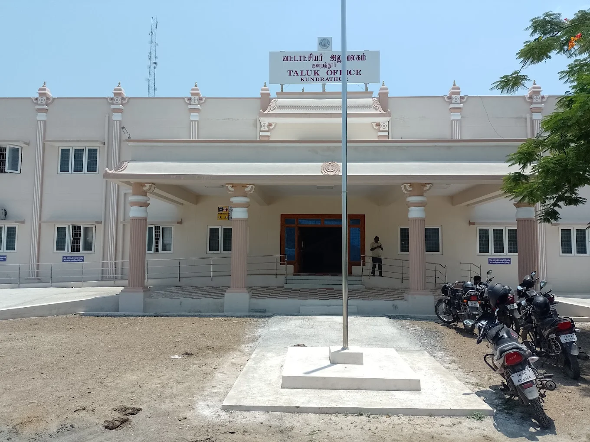

The kundrathur Taluk Office serves as the primary administrative hub for the kundrathur Taluk, responsible for managing various governmental functions and services in the region. It plays a crucial role in ensuring the smooth operation of local governance and providing essential services to the residents of the area.